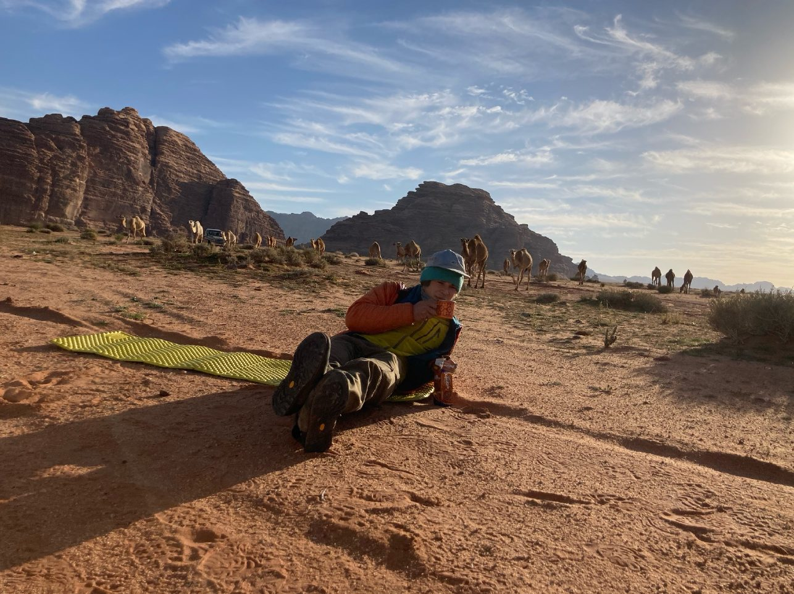
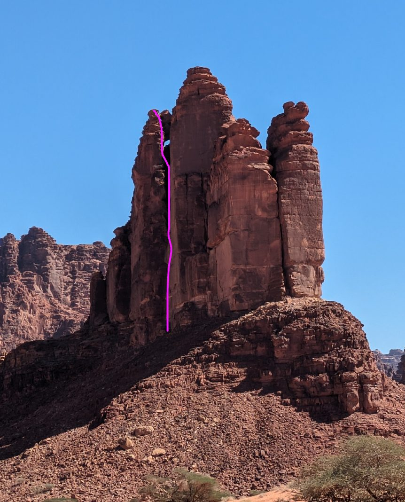
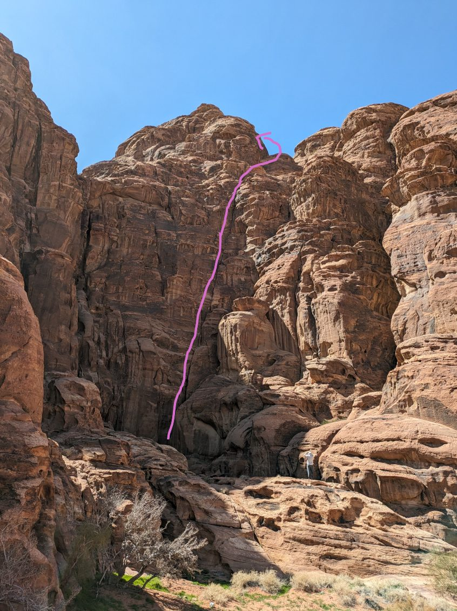
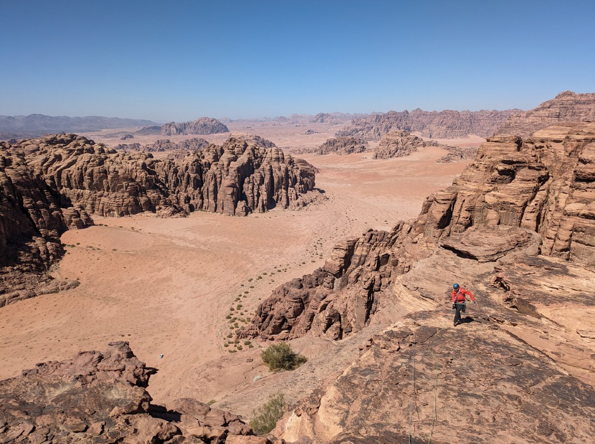
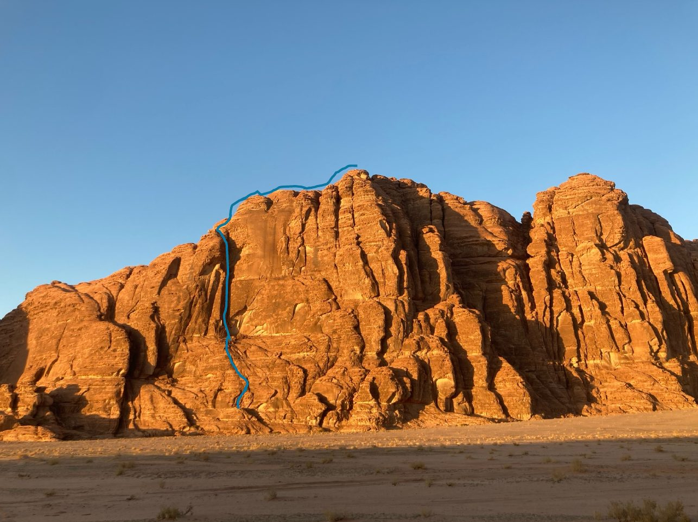

Climbing in Saudi Arabia
From 23 February to 5 March 2024, Gediminas Simutis and I climbed in northwestern Saudi Arabia, in Wadi Al Disah and around Tabuk. We opened four multi-pitch routes on sandstone, from 5c to 6b and 150 to 250 m long. None of them has bolts: bring cams and nuts. Grades are French.
The full topos with more photos (PDF) have everything below in one document.

Dinner with the Prince
Wadi Al Disah · 6a · ca. 200 m · no bolts, cams and nuts · first ascent 26 February 2024

It’s a Boy
Tabuk area · 5c · ca. 150 m · no bolts, cams and nuts · first ascent 28 February 2024

No Problem Brother
Tabuk area · 5c · ca. 250 m · no bolts, cams and nuts · first ascent 29 February 2024

Johnny Jumar
Tabuk area · 6b · ca. 250 m · no bolts, cams and nuts · first ascent 2–3 March 2024

Routes by Gediminas Simutis and Cyrill Bösch. More of my climbing and my research: cyboesch.github.io.